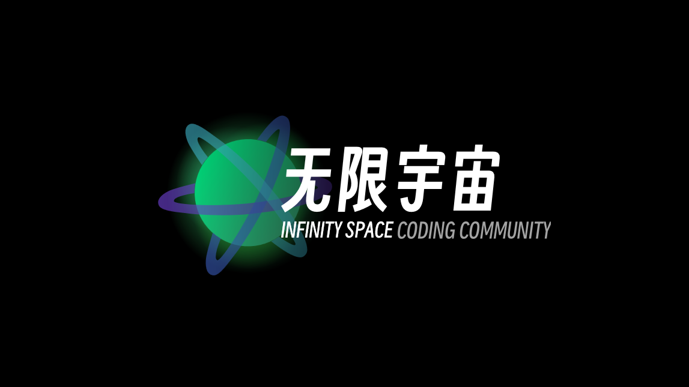
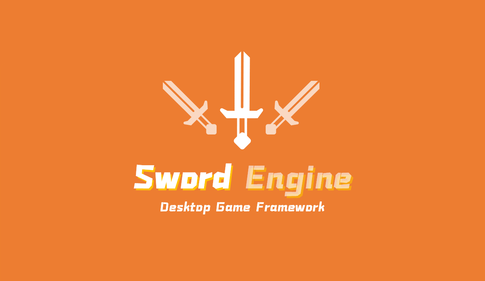

我的项目

IS Coding Community
创意交互界面设计。以科幻故事中常有的「终端系统」为基础，创造了一个无限宽广的未来宇宙。
Web
线上网站

Sword Engine
2D桌面游戏框架，可使用JavaScript开发，对于Electron的二次封装与游戏对象管理框架。
Node.js
游戏应用支持库
The Adventure Of Andrus
神明藏匿在高天之上的最终「天道」将会遭到深掘，你能引导远古的强大力量找到其中的秘密吗？
SwordEngine
游戏